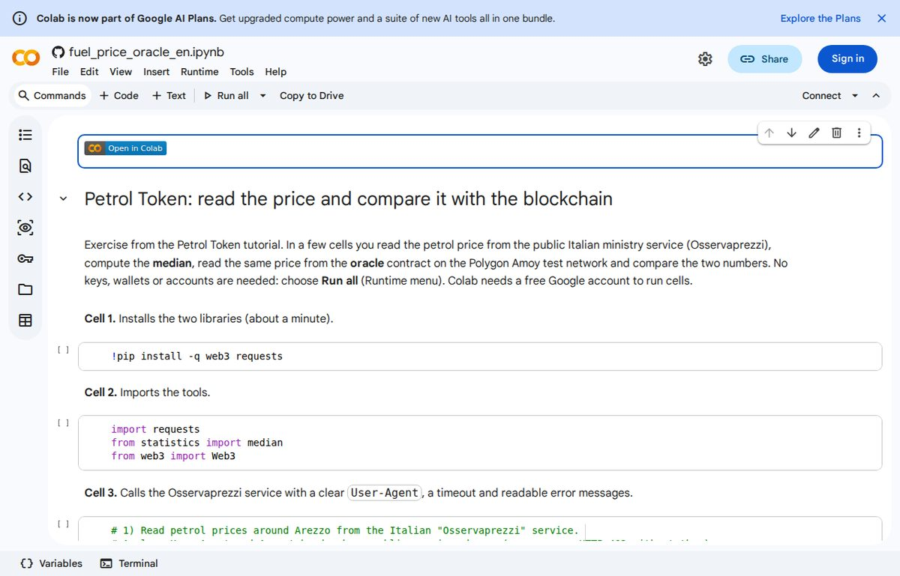

Capitolo 2 di 9
Il dato aperto del Ministero
Il Ministero delle Imprese e del Made in Italy pubblica i prezzi che i distributori comunicano ogni giorno, e li mostra nell'app Osservaprezzi Carburanti. L'app usa un servizio web che si interroga con una richiesta POST indicando un punto sulla mappa (latitudine e longitudine) e il tipo di carburante. La risposta è un elenco di impianti vicini, e per ognuno ci sono il nome, la posizione, la data dell'ultimo aggiornamento e i prezzi: per ogni carburante un price in euro al litro e un campo isSelf che dice se è prezzo «self» o «servito».
Il nostro programma tiene solo la benzina self degli impianti intorno ad Arezzo: il servizio ne restituisce circa quaranta, entro una decina di chilometri dal punto scelto. Un punto da ricordare: il servizio non è documentato in modo ufficiale come un'API, quindi il suo formato potrebbe cambiare (lo riprendiamo nelle domande frequenti).
Perché la mediana
Con quaranta prezzi serve un solo numero. La media si lascia tirare da un errore: se un gestore scrive per sbaglio 2,399 invece di 1,899, la media sale. La mediana è il valore in mezzo quando i prezzi sono messi in fila, e un errore isolato non la sposta.
const prices = [1.979, 1.989, 1.989, 1.999, 2.399];
const sorted = [...prices].sort((a, b) => a - b);
const median = sorted[Math.floor(sorted.length / 2)]; // 1.989prices: cinque prezzi di esempio in euro al litro. L'ultimo, 2,399, è un refuso.sorted: la stessa lista messa in ordine crescente (la copia[...prices]lascia intatta quella originale).sorted.length / 2: con cinque valori dà 2,5 eMath.floorlo porta a 2, cioè il terzo posto (si parte da zero).- Il risultato è 1,989. La media degli stessi valori sarebbe circa 2,07, trascinata dal refuso.
Con un numero pari di prezzi si fa la media dei due valori centrali: il programma completo lo gestisce.
Il prezzo del POL in euro, che serve al capitolo 6, si legge da un servizio pubblico di quotazioni (nel progetto CoinGecko), una volta al giorno.
Provalo subito
Esegui la chiamata vera al servizio del Ministero e calcola la mediana in Python, senza installare nulla.
Colab richiede un account Google gratuito per eseguire le celle; senza account si legge il notebook con i risultati già salvati.
Cosa dovresti vedere
Le cifre cambiano ogni giorno; questo è il risultato che abbiamo ottenuto eseguendo il notebook il 2 novembre 2026:

HTTP 200 - stations received: 44
Median petrol price: 1.990 EUR/L over 42 stationsProva tu
Cambia i numeri della lista: metti un refuso enorme (per esempio 9,999) e verifica che la mediana non si muove, mentre la media sì. Puoi farlo nella console del browser (tasto F12, scheda Console).
Cosa hai imparato
- Il Ministero pubblica i prezzi degli impianti, con data e distinzione self/servito.
- Usiamo la benzina self degli impianti intorno ad Arezzo, circa quaranta.
- La mediana è più robusta della media davanti a un errore isolato.